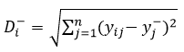
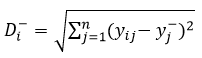

Hasil Perhitungan
Sistem Pendukung Keputusan AHP-Topsis
Berikut adalah langkah perhitungan dengan metode AHP-Topsis.
Data Kriteria dan Alternatif
Data Kriteria
| NO | Kriteria | Tipe |
|---|
Data Alternatif
Perhitungan AHP
Menentukan Tabel Perbandingan Berpasangan
Konsep dasar AHP adalah penggunaan matriks pairwise comparison (matriks perbandingan
berpasangan) untuk menghasilkan bobot relative antar kriteria. Suatu kriteria akan
dibandingkan dengan kriteria lainnya dalam hal seberapa penting kriteria tersebut
dibandingkan kriteria lain.
Menghitung Nilai Eigen
| Nilai Eigen |
|---|
Normalisasi tabel sebelumnya dengan membagi nilai tiap kolom dengan nilai
total pada kolom tersebut.
Nilai Eigen dihitung dengan mencari rata-rata tiap baris dari tabel yang telah dinormalisasi.
Nilai Eigen dihitung dengan mencari rata-rata tiap baris dari tabel yang telah dinormalisasi.
Menghitung Konsistensi
Langkah menghitung Nilai Konsistensi
1. Kalikan tiap kolom Tabel Perbandingan Berpasangan dengan Nilai eigen yang didapat.
2. Hitung total tiap baris.
3. Hitung nilai lamda (λ) dengan membagi nilai total dengan nilai eigen.
4. Hitung Lamda(λ) max dengan menghitung rata-rata nilai lamda(λ).
1. Kalikan tiap kolom Tabel Perbandingan Berpasangan dengan Nilai eigen yang didapat.
2. Hitung total tiap baris.
3. Hitung nilai lamda (λ) dengan membagi nilai total dengan nilai eigen.
4. Hitung Lamda(λ) max dengan menghitung rata-rata nilai lamda(λ).
| Nilai Total | Nilai Eigen | Nilai Lamda (λ) |
|---|
5. Hitung Nilai CI dengan rumus berikut :
6. Hitung Nilai CR dengan rumus berikut :
(Nilai RI ditentukan berdasarkan jumlah kriteria)
Jika nilai CR kurang dari 0,1 (10%) maka matriks memiliki perbandingan yang konsisten sedangkan, jika Nilai CR lebih dari 0,1 (10%) maka nilai perbandingan kriteria perlu diubah.
6. Hitung Nilai CR dengan rumus berikut :
(Nilai RI ditentukan berdasarkan jumlah kriteria)
Jika nilai CR kurang dari 0,1 (10%) maka matriks memiliki perbandingan yang konsisten sedangkan, jika Nilai CR lebih dari 0,1 (10%) maka nilai perbandingan kriteria perlu diubah.
Perhitungan Topsis
Menormalisasi Matriks Keputusan
Hitung Matrik Keputusan Normalisasi dengan Rumus :
Hasil Normalisasi
Menghitung Matriks Normalisasi Terbobot
Kalikan Tiap kolom dengan bobot kriteria yang didapat dari proses AHP (Nilai Eigen).
Menghitung Solusi Ideal Positif dan Negatif tiap Kriteria
| Kriteria | Solusi Ideal Positif |
|---|
| Kriteria | Solusi Ideal Negatif |
|---|
Solusi ideal Positif adalah nilai maksimum pada tiap kriteria, jika kriteria bertipe
cost maka yang diambil adalah nilai minimum.
Solusi ideal Negatif adalah nilai minimun pada tiap kriteria, jika kriteria bertipe cost maka yang diambil adalah nilai maksimum.
Solusi ideal Negatif adalah nilai minimun pada tiap kriteria, jika kriteria bertipe cost maka yang diambil adalah nilai maksimum.
Menghitung Jarak Ideal Positif dan Negatif tiap Alternatif
| Alternatif | Jarak Ideal Positif |
|---|
| Alternatif | Jarak Ideal Negatif |
|---|
Jarak Ideal Positif :
Jarak Ideal Negatif :

Keterangan
yj+ = solusi ideal positif untuk atribut ke-j
yj- = solusi ideal negatif untuk atribut ke-j
yij = elemen dari matriks keputusan yang ternormalisai terbobot Y
Jarak Ideal Negatif :

Keterangan
yj+ = solusi ideal positif untuk atribut ke-j
yj- = solusi ideal negatif untuk atribut ke-j
yij = elemen dari matriks keputusan yang ternormalisai terbobot Y
Menghitung Nilai Akhir dan menentukan Peringkat
| Alternatif | Nilai Akhir | Peringkat |
|---|
Menghitung nilai Akhir (Nilai Preferensi) :
Hasil dengan nilai tertinggi adalah Alternatif Terbaik.
Hasil dengan nilai tertinggi adalah Alternatif Terbaik.